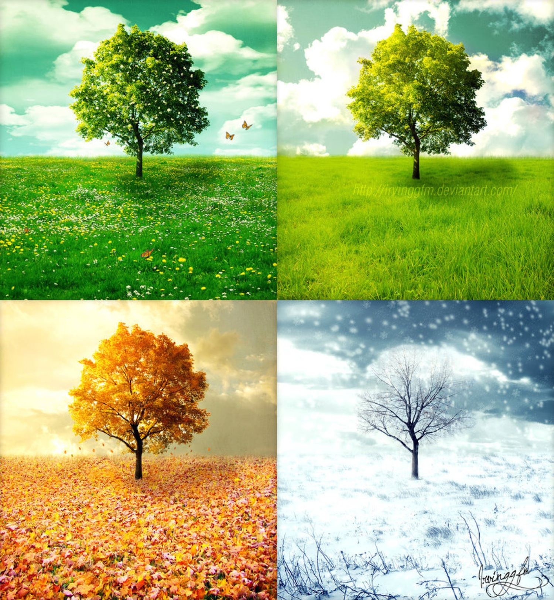

About:
There are four different types of seasons which consist of Winter, Fall, Spring, and my personal favorite, Summer. Every year each city, state, country, etc. goes through these different seasons. Many tourist destinations favor certain seasons because thats what drives in the tourists.
